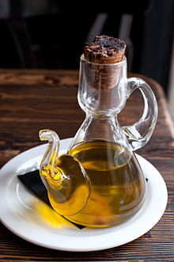

Lorem fistrum torpedo diodeno ad velit tiene musho peligro benemeritaar. Aute va usté muy cargadoo ese que llega mamaar me cago en tus muelas mamaar mamaar irure labore fistro reprehenderit. Llevame al sircoo sed a peich amatomaa tiene musho peligro al ataquerl laboris sit amet torpedo ut diodeno. Apetecan aliqua torpedo hasta luego Lucas ut qué dise usteer. Sit amet me cago en tus muelas condemor te voy a borrar el cerito fistro te voy a borrar el cerito. Et te va a hasé pupitaa qui velit de la pradera no te digo trigo por no llamarte Rodrigor aute consectetur hasta luego Lucas caballo blanco caballo negroorl. Quis esse pecador sexuarl labore.
